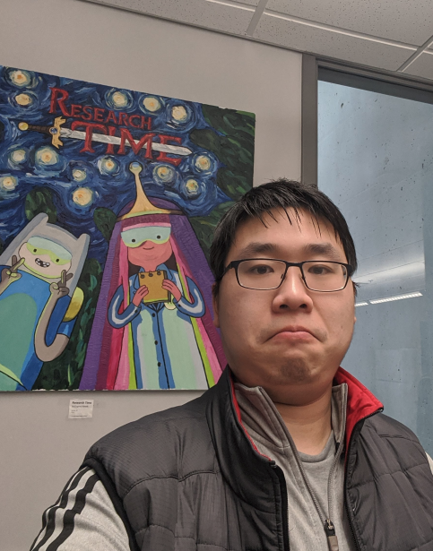
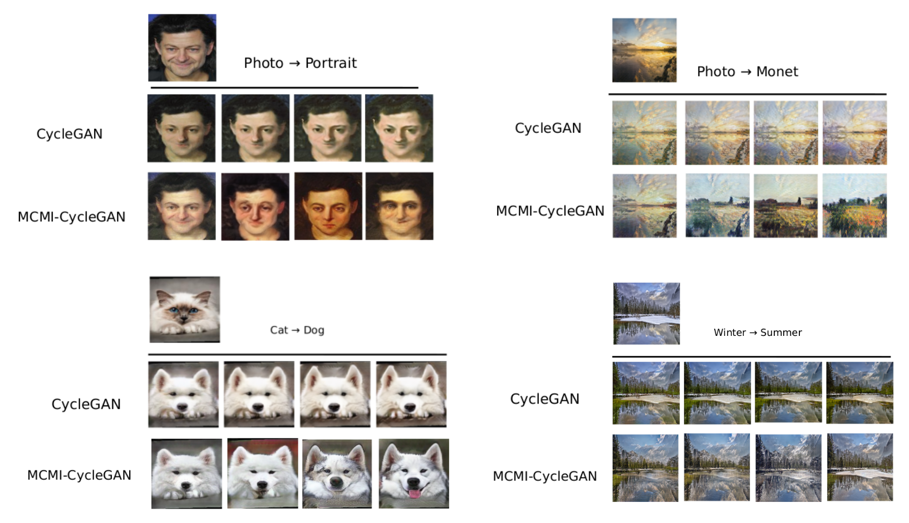
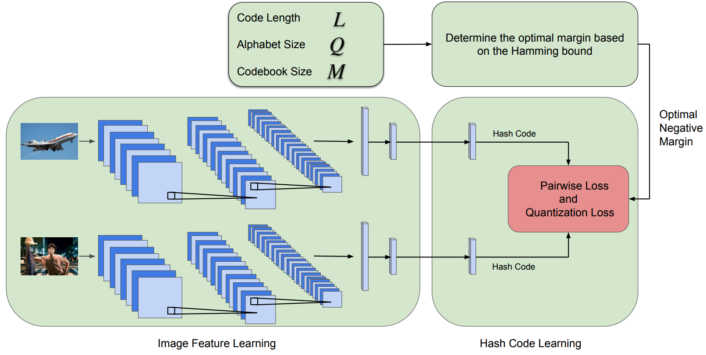

 |
Sam Xu 徐翔 PhD Student |
Aboute Me
|
I am a second year PhD student at Simon Fraser University, advised by Prof. Yasutaka Furukawa . Previsouly, I obtained my B.S. in Electrical and Computer Engineering from Carnegie Mellon University, where I was advised by Prof. Kris Kitani. My research interests lie in computer vision and machine learning, with a particular focus on holistic 3D scene understanding. |
Experiences
- July 2020 - Dec 2020: Facebook AI Research, advised by Hanbyul (Han) Joo
- Jan 2019 - Mar 2019: Baidu Institute of Deep Learning
Selected Projects
 |
MCMI: Multi-Cycle Image Translation with Mutual Information Constraints Xiang Xu, Megha Nawhal, Greg Mori, Manolis Savva [paper] [webpage] |
 |
Error Correction Maximization for Deep Image Hashing Xiang Xu, Xiaofang Wang, Kris M. Kitani British Machine Vision Conference (BMVC), 2018 [paper] |